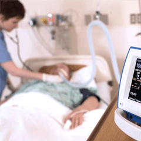

Пальчиковый
Пульсоксиметр
Вирусы теперь не страшны!
Рекомендован ВОЗ и используется в больницах

Высокая точность
измерений

Двухцветный
поворотный экран
Компактный
размер
- Позволяет узнать о заражении вирусом в считанные минуты без врачей и анализов
- Внесен в реестр средств измерений и используется в больницах
Поздняя диагностика
заболеваний
опасна!
01 Вы рискуете получить массу осложнений в виде атипичной пневмонии с дыхательной недостаточностью
02 На поздних стадиях регистрируется наибольшее количество смертей
03 Пока вы не знаете о заражении, в зоне риска не только Вы, но и ваши близкие, друзья, коллеги
С пульсоксиметром
вы почувствуете себя
в безопасности!
- Использование пульсоксиметра позволит Вам своевременно узнать о заражении и принять все необходимые меры
- Рекомендуется использовать всей семьей, чтобы исключить распространение вируса среди её членов
- Пульсоксиметр позволит проверить вашего коллегу или приятеля, в случае подозрений
- Компактен и прост в использовании, что позволяет брать его с собой и применять в "полевых условиях"
Кому рекомендован пульсоксиметр?

Пациентам, страдающим хроническими заболеваниями сердечно-сосудистой системы
Спортсменам для контроля кислорода в крови при физической нагрузке и быстрой коррекции уровня своих нагрузок

Пациентам, страдающим хроническими заболеваниями дыхательной системы
Людям, перенесшим инфаркт (в период реабилитации) для контроля физических нагрузок
Преимущества
личного пульсоксиметра

Компактный прибор поможет вам отслеживать реальные симптомы заболевания, а не ждать "сильный кашель и температуру 40"
Избавит от стресса. Каждый раз, когда переживания будут накатывать вы сможете провериться за несколько секунд
Вам не придется идти в больницу для сдачи теста, где вы можете случайно заразиться

Будете держать руку на пульсе. Тест можно проводить каждый день без ограничений
Как пользоваться прибором?

Для снятия показателей индекса сатурации и ЧСС достаточно зафиксировать прибор на пальце.
Пульсоксиметр начинает работу с нажатия одной кнопки, а автоматическое отключение происходит спустя 8 секунд после завершения работы.

Прибор компактен и удобен для использования в домашних условиях, оснащен универсальным датчиком, благодаря которому им могут пользоваться и взрослые, и дети.
Как работает
пульсоксиметр?
Пульсоксиметр измеряет пульс и процент кислорода в крови - наиболее яркие показатели заболевания

Светодиоды просвечивают кровеносные сосуды, а датчики считывают точную информацию о пульсе и проценте кислорода
Двухцветный поворотный экран с 10 уровнями яркости поворачивается во всех направлениях, что обеспечивает удобство просмотра результата
Доктор Комаровский
рекомендует!
Технические
характеристики

| Энергопотребление:менее 40 мА | |
| Ширина:34 мм | |
| Длина:60 мм | |
| Диапазон измерения пульса:30-235 уд/мин | |
| Диапазон измерения SpO2:70-99 % | |
| Высота:30 мм | |
| Цифровое отображение пульса на дисплее:Да | |
| Цифровое отображение значения SPO2 на дисплее:Да | |
| Тип дисплея: ЖК-дисплей | |
| Тип батарейки:ААА 1,5 В | |
| Количество режимов информации на дисплее:6 | |
| Индикатор заряда батареи на дисплее:Да | |
|
Автовыключение после окончания использования:через 8 секунд |
Наш пульсоксиметр спасает жизни
уже более 10 лет!

Профессиональный медицинский прибор, поставляется во все больницы России более 10 лет. Прошел все клинические испытания и разрешен на территории РФ.
Регистрационное удостоверение на медизделие ФСЗ 2009/03850 от 21.07.2016. Внесен в реестр средств измерений 67136-17.
Пульсоксиметр предназначен к использованию для личного самоконтроля и врачебной практике. В клинических условиях используется в терапиии, в хирургии, анестезии реанимации и скорой помощи.

Регистрационное удостоверение на медицинское изделие
Сертификат о соответствии
Мнение специалиста
Кузьмина Елена Викторовна
Терапевт, доктор общей практикиСтаж работы: 25 лет
Отзывы покупателей

Андрей Ю.
супервайзер, 37 лет
Наша компания занимается поставками продуктов питания по торговым точкам. Штат большой Постоянные контакты с людьми в условиях эпидемиологической обстановки - дело рискованное. И тут, руководство дало распоряжение закупить пульсоксиметры, чтобы обезопасить сотрудников. Теперь каждый работник с утра и в конце дня проходит тест. Благо, занимает он несколько секунд. Двоих отправили домой сразу, хотя кто бы мог подумать. Еще двоих в процессе. Сейчас уже поправляются. Зато остальные работают, здоровые, румяные. А в среднем, у нас самый низкий процент заболевших по отрасли в регионе, я узнавал у коллег. Сейчас многие по нашему примеру тоже начинают вводить такую практику. В общем, пульсоксиметры эти решают. Спасибо!
Елена С.
пенсионерка, 68 лет
Я боюсь вируса, из дому не выхожу. Мне дети привезли эту штуку, говорят спокойней будет, они, говорят, сами уже пользуются. Там все просто, инструкция понятная, видно хорошо, экран хороший. Я три раза в день проверяюсь теперь. Рассказала соседке, она заинтересовалась, попросила проверить их с мужем. Я дала ей, а у нее у мужа показало низкий кислород, вызвали скорую и госпитализировали его сразу. говорят, хорошо, что вовремя спохватились, еще бы чуть чуть и может не спасли бы. Немолодые уже все таки. Так то. Я теперь без прибора этого никуда! Спасибо Вам!

Светлана Ж.
домохозяйка, 35 лет
Мы живем с мужем, детьми и родителями моими в частном доме. Семья большая, за всеми не уследишь. Ситуация, конечно, сейчас неспокойная. Стала интересоваться самостоятельными способами диагностики, мерами предосторожности. Дети все таки в школу ходят, у мужа работа с людьми, родители старенькие уже. Увидела вашу рекламу, перешла на сайт, посмотрела, почитала отзывы и заказала. Цена то совсем бросовая, да еще и по скидке. На здоровье никаких денег не жалко. Теперь пользуемся, проверяемся каждый день. Пока все здоровы, слава богу, без происшествий. Рассказала подруге, она тоже заказала, так выяснилось, что у них с мужем вирус. Оба отправились в больницу. Вылечились, без последствий вроде, но все же. Рекомендую пульсоксиметр по собственному опыту. Будьте здоровы!
Как сделать
заказ?
 Заявка
Заявка
Оставьте заявку на нашем сайте, заполнив форму заказа
 Подтверждение
Подтверждение
Наш менеджер перезвонит вам для уточнения деталей и мы отправим ваш товар
Оплатите вашу посылку при получении на почте
Пальчиковый
Пульсоксиметр
Вирусы теперь не страшны!
Рекомендован ВОЗ и используется в больницах
Высокая точность
измерений
Двухцветный
поворотный экран
Компактный
размер
- Позволяет узнать о заражении вирусом в считанные минуты без врачей и анализов
- Внесен в реестр средств измерений и используется в больницах